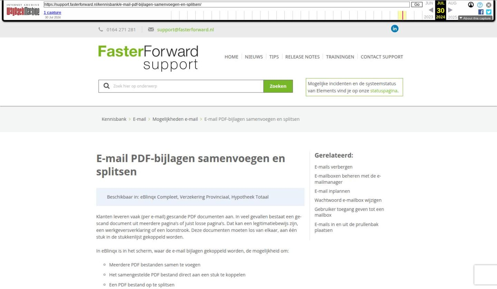

E-mail PDF-bijlagen samenvoegen en splitsen

Tekstinhoud
E-mail PDF-bijlagen samenvoegen en splitsen
Beschikbaar in: eBlinqx Compleet, Verzekering Provinciaal, Hypotheek Totaal
Klanten leveren vaak (per e-mail) gescande PDF documenten aan. In veel gevallen bestaat een gescand document uit meerdere pagina's of juist losse pagina's. Dat kan een legitimatiebewijs zijn, een werkgeversverklaring of een loonstrook. Deze documenten moeten los van elkaar, aan één stuk in de stukkenlijst gekoppeld worden.
In eBlinqx is in het scherm, waar de e-mail bijlagen gekoppeld worden, de mogelijkheid om:
Meerdere PDF bestanden samen te voegen
Het samengestelde PDF bestand direct aan een stuk te koppelen
Een PDF bestand op te splitsen
De opgesplitste PDF bestanden direct aan een stuk te koppelen
De originele PDF bestanden blijven behouden in de e-mailbijlage.
Splitsen PDF-bijlagen
Samenvoegen PDF-bijlagen
Splitsen PDF-bijlagen
Een e-mail met bijlagen is gekoppeld aan een dossier. Je klikt nu op het paperclipje voor koppelen.
Alle bijlagen zijn nu zichtbaar in het volgende scherm:
Met het schaaricoon kan bepaald worden welke pagina's gewenst zijn in een nieuw samengesteld document.
Wanneer je op de groene schaar klikt, wordt dit document aangemaakt.
Daarna is het mogelijk om het nieuw aangemaakt bestand te plaatsen in een map en eventueel te koppelen aan een stuk. Via de dropdownmenu's in de groene regels kan je selecteren welke map en stuk dit moet zijn. Via het groene koppelicoon voer je de actie uit.
Samenvoegen PDF-bijlagen
Indien een e-mail met bijlagen is gekoppeld aan het dossier is het ook mogelijk om PDF-bijlagen samenvoegen te voegen. Hiervoor klik je in de e-mail op de paperclip.
Vink de bijlagen aan die je wilt koppelen. Er verschijnt nu onderin het scherm het woord 'Samenvoegen'.
Klik op 'Samenvoegen' en in het volgende scherm geef je een naam aan het document en je bepaalt de volgorde door met de muis te klikken op de bestandsnaam en te slepen.
Klik nu op het icoon 'samenvoegen'. De bewerkte bestanden kunnen nu gekoppeld worden aan map en indien gewenst een stuk.
Laatste update: 23 juli 2024
Was deze informatie nuttig?
Ja Nee